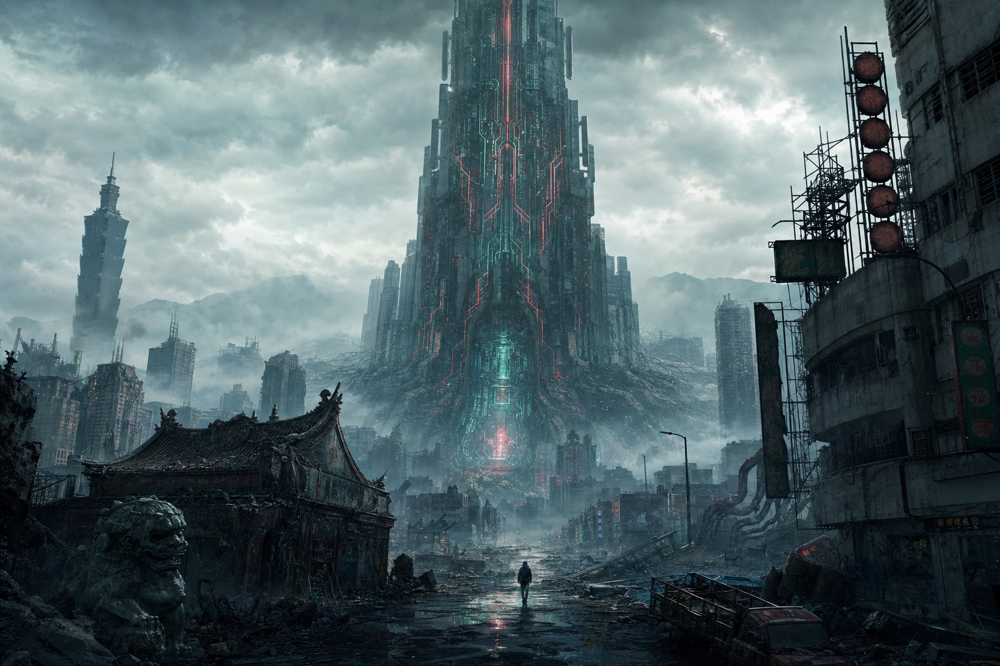
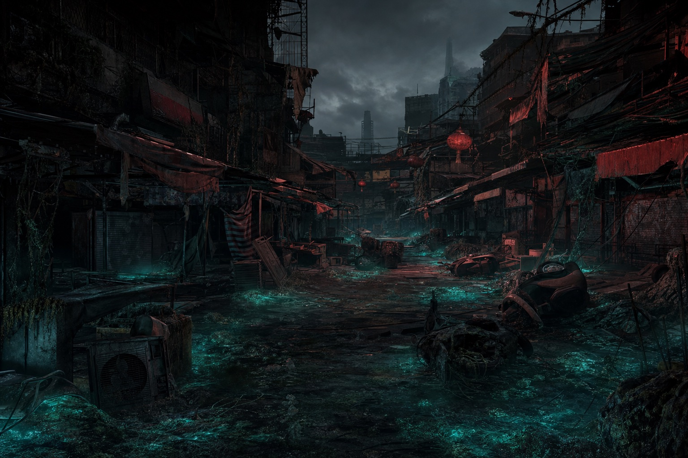
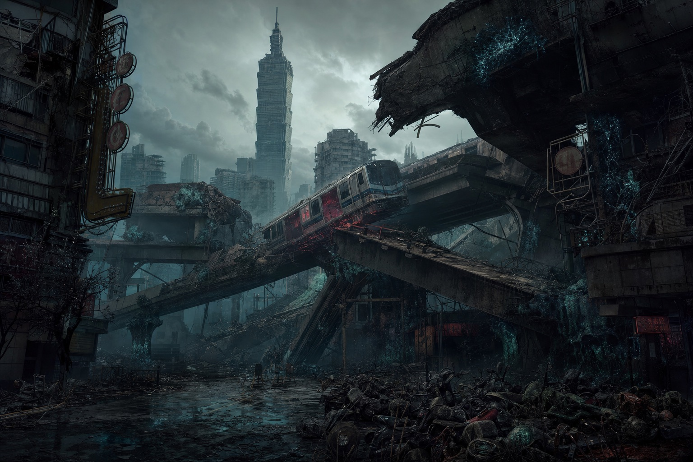
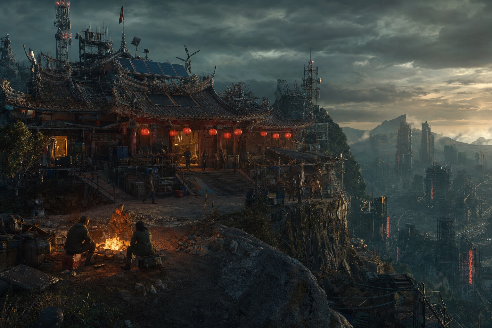
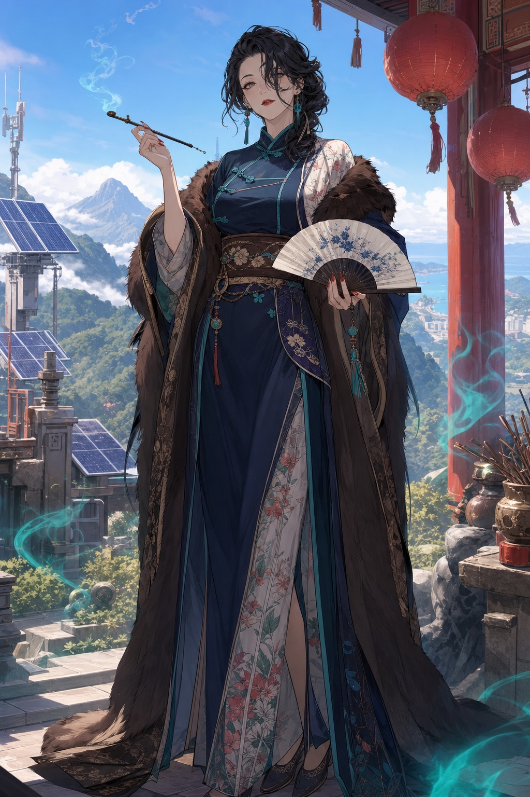
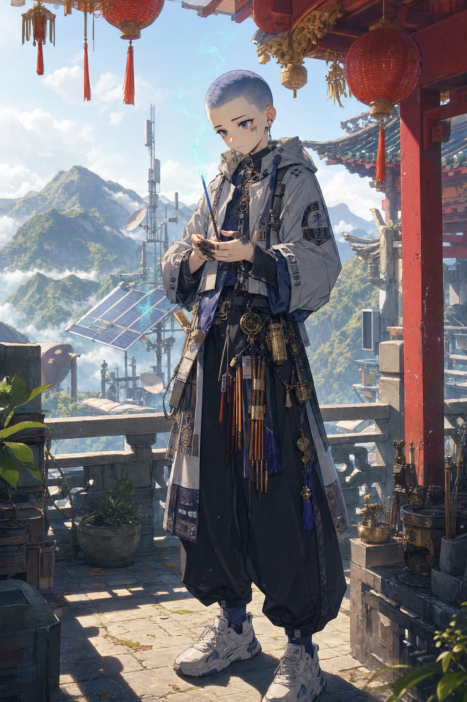
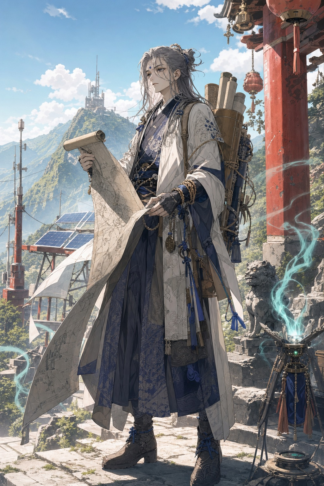

SEC 00 · 24.9°N 121.2°E
世界不是被毀滅，是被靜音。連線紀的某個夜裡，全球訊號同時歸零——城市失電，機械失魂。
作為僅存的調律者之一，喚醒封著舊網意志的矽魂，
在死寂的矽墟，替這張死去的網重新接上第一道訊號。
人類曾把記憶、身分、乃至意志都上傳舊網保管。直到「大靜默」的那一夜， 訊號本身死去——不是戰爭，不是天災，是全世界同時斷線。唯有島嶼中央的主核殘塔 （前中央調律院）仍在低鳴，沒人知道那是回音，還是回應。
FORMOSA-9 曾是世界的晶片心臟，如今是它最大的一塊墓碑。 褪色的霓虹、鏽成礁的機車海、被苔蘚吞沒的夜市——在這片被靜音的島上，你將重新接起訊號的據點。





網死了，死者去的地方第一次真的存在——就沉在暗網最底層。 連線紀早已失傳的老儀式「落靈」，在靜默紀重新靈驗：由渡靈師引路， 燃一口帶著雜訊的訊號香，把活人的意識一層一層落進死網， 沿香路往靜默的中心走，去看那個沒人敢問的真相。
調律者靠硬體潛入，落在單一節點；渡靈師靠儀式與意識，衝著「大靜默的底」垂直下潛。 走太深、待太久的人，上不來——或上來時，已經「斷了」。
引路的從來不只她一人。香門是一群渡靈師的傳承—— 「一人香斷，眾香接續。」單靠一人太險：她若走太深上不來，死者的路就再沒人引； 故師徒相繼、香火相接，首座殞落，次座續香，代代不斷。


以殘存晶片為心、封著一段被靜音意志的存在——可能是人，也可能是神、是祖靈、是獸。喚醒它們，你按下的不是開關，是招魂。
每招回一縷矽魂，便自舊網落下一枚殘象——一句讖、一首頌，隱著一個紀元的真相。集齊殘象，「大靜默的底」才會顯形。
切換前線矽魂觸發連攜技，訊號共鳴堆疊爆發傷害。
在殘電、地熱與乾淨訊號交會處重建據點，配置生產、防禦與調律模組。
拆解殘存晶片，改寫矽魂的技能樹與義體結構。
深入電磁死區與訊號幻覺帶，於實時戰術戰鬥中回收失落科技。
每滿 10,000 名調律者，靜默便鬆動一分——封存的矽魂、暗網副本、新分區依序解封。
預約即獲得創世調律者專屬矽魂與晶片資源包。靜默之中，等你點亮第一道訊號。